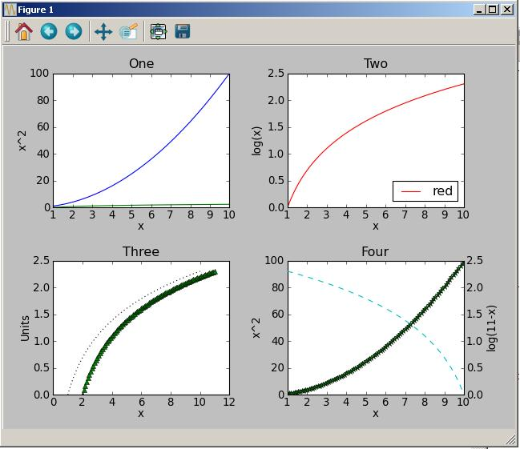

Plotting in Python with matplotlib
Based on Lecture Material by Anthony Scopatz and Katy Huff
Plotting in Python
Do this while I talk. If this is your first use of matplotlib (ever on this machine), it will take a little longer starting up.
python
from matplotlib import pyplot
The ability to visually represent data is one of the more important tools to the scientific user of python. The most popular and arguably most mature library for producing publication quality 2D plots matplotlib (MatPlotLib). In the developers own words, MatPlotLib is
a python 2D plotting library which produces publication quality figures in a variety of hardcopy formats and interactive environments across platforms. matplotlib can be used in python scripts, the python and ipython shell (ala MatLab or mathematica), web application servers, and six graphical user interface toolkits."
pyplot, pylab and matplotlib. numpy, MatLab and more…
The underlying structure of MatPlotLib is very general and customizable. Thankfully, you don't actually need to interact with all that power. The way to generate plots and modify them is through the pyplot interface. The pyplot interface is much much inspired by Matlab's plotting commands, so it should if you're familiar with that it should be easy to pick up.
- matplotlib - raw access to the plotting library. useful for extending matplotlib or doing very custom things
- pyplot - MatLab-like interface to matplotlib (use this one!)
- pylab - pyplot + numpy
Aside: Multiple Interfaces to MatPlotLib
In addition to the object oriented pyplot interface, pyplot implements a clone of Matlab's plotting interface. The main difference is that the Matlab interface has the paradigm of the "current figure." So plotting and labeling commands implicitly refer to the current figure/subplot. This is fine so long as your plotting commands are simple and sequential. However, when your program requires that you modify a figure in multiple contexts the Matlab interface becomes very difficult to keep up with.
In this session, we will use the object oriented interface exclusively. It is trivial to degrade to the Matlab interface if you're feeling lazy, but the object oriented interface is powerful. It is also more explicit.
python
import matplotlib.pyplot as plt
First things first. Let's plot something. Open up a file, copy, paste, execute.
python
from matplotlib import pyplot as plt
x = range(0,10)
y = [val**2 for val in x]
ax = plt.subplot(111)
ax.plot(x,y)
plt.show()
figures, subplots, and axes
MatPlotLib plots are organized into figures, subplots and axes.

- figure = the whole window (Figure 1 above)
- subplot = the regular grid of four plots (One, Two, Three, and Four above) within the window
- axes = a handle to the place in the subplot to put your curves (there are four axes defining the locations of the 6 curves above.)
Hands On Exercise : Making a Plot
Lets make a plot. Retyping everything is not fun. Open up your favorite text editor to create a file "plot.py" to hold your plotting script.
-
from matplotlib import pyplot as plt
-
Make a figure: fig = plt.figure()
-
Add a subplot to the figure: ax = fig.add_subplot(111)
-
Plot on the subplot axes: ax.plot(range(10))
-
Show the figure: plt.show()
Your file should look like :
python from matplotlib import pyplot as plt fig = plt.figure() ax = fig.add_subplot(111) ax.plot([1,2,3,4,5,6]) -
Run your python file from the terminal python plot.py &
Customizing your Figure
Other, sometimes more convenient ways to get axes.
```python
# Useful for figures composed of multiple subplots fig = plt.figure() ax1 = fig.add_subplot(221) ax2 = fig.add_subplot(222) ax3 = fig.add_subplot(223) ax4 = fig.add_subplot(224)
# Useful for figures with one subplot (ie the subplot is the figure) ax2 = subplot(111)
# Useful for overlaying axes, sharing the x axis ax3 = plt.twinx(ax2) ```
Customizing your Plot
Plot is pretty powerful, lets peruse the MatPlotLib documentation.
- By editing plot.py and referencing the documentation try to add a label to an axis or change the color.
- If you're feeling adventurous and you've successfully added a label, try ax.legend()
Hints:
- legend
- colors
- linestyles
- kwargs !
Other Types of Line Plots
MatPlotLib as all the usual types of plots
log-linear, linear-log, log-log
```python
ax.semilogx(x,y) ax.semilogy(x,y) ax.loglog(x,y) ```
Execute ax.semilogx(range(1,11),range(10)) within your script instead of ax.plot(x) and run it again to see the effect.
Contour plots and pcolor
Notice that for the z argument to pcolor is shorter by one in both directions. You should think of z as being defined zone centered. If you forget to do so, it will drop the last row and column.
```python
from matplotlib import pyplot as plt import numpy as np
r = np.linspace(0.1,2,200) t = np.linspace(np.pi/4,7np.pi/4,200) r,t = np.meshgrid(r,t) x = rnp.cos(t) y = r*np.sin(t) z = (x+0.6)2 + (y-1.)2
ax = plt.subplot(111)
ax.pcolor(x,y,z[1:,1:]) # ax.colorbar()
con = ax.contour(x,y,z) ax.clabel(con)
plt.show() ```
Random useful things
Spy
Matlab converts may have used this function to look at the structure of sparse matrixes.
```python
n = 20 f = diag(ones(n)) + diag(ones(n-1),1) + diag(ones(n-3),-3) spy(f) ```
Masked Arrays
Masked arrays are numpy ndarrays that have a mask to hide elements of the ndarray. They are really handy to use when plotting and you just want to make particular parts of the plot "go away." In theory you could modify the underlying arrays to do the right thing, but that's a lot of work. You shouldn't have to do it if you don't have to. Masked arrays are the answer. For more detailed information, check out the masked arrray documentation ] and constructing masked arrays.
Starting from the pcolor plot, add the following code after defining z and before plotting things.
python
z = np.ma.masked_where( np.abs(y-x) < 0.2, z )
draw() vs show()
If you're changing plots after they render (ie show()) you have to tell MatPlotLib to draw the plot. draw() forces a figure to redraw. If you're doing all your plotting from scripts, you probably won't have to deal with draw(). If you're programming figures such that they change over the course of your program, you will need to use draw to refresh the figure.
How do I make a plot like … ?
MatPlotLib has an extensive gallery of plots with source code. Take a look through those; they probably have something similar to what you want to do. If you click on one of these images, you'll land on a page with the source that created it. Recently, I've noticed that the server has been throttling my traffic. If you see one you like but get a "Too many requests warning" go to the matplotlib github repository (https://github.com/matplotlib/matplotlib/tree/master/examples/pylab_examples) and look for the source code there.
My favorite, among these, is polar_bar.py.
Choose your own adventure
- keyboard/mouse bindings (interactive plots!)
- image plotting
- Shared Axes Across Subplots
Event binding with MatPlotLib
MatPlotLib has a built in mechanism for handling keyboard/mouse events in a platform independent way. This can be useful when you want to toggle different data on and off in the same figure, or step through time dependent data, or something else crazy that you dream up. All you need a a function that draws the figure and some logic to identify events that your care about. MatPlotLib handles the rest. Lets walk through the following code.
- A MovingPlot instance remembers which plot and axes to modify (no current figure nonsense!)
- In the constructor, we draw() the initial frame
- The attribute cid listens for "key press events" and calls self.update(event) when something happens
- event is a 'key_press_event' object, with attributes like "key"
- update() takes one argument: an event object (other than the unavoidable self)
- Based on the event object passed, update() only does something on right and left arrow key presses
- MatPlotLib has several other supported events
```python
from matplotlib import pyplot as plt import numpy as np
class MovingPlot(object): """ MovingPlot plots a figure that flows across the screen. Right and left arrows move the figure one step""" def init(self, r0= [-0.8, 1.0], v0 = [0.1, 0.]): # set up grid r = np.linspace(0.2,2,20) t = np.linspace(np.pi/4, 7np.pi/4, 20) r,t = np.meshgrid(r,t) self.x = rnp.cos(t) self.y = r*np.sin(t)
self.x0 = r0[0]
self.y0 = r0[1]
self.vx = v0[0]
self.vy = v0[1]
# create figure and axes for reuse
self.fig = plt.figure()
self.ax = self.fig.add_subplot(111)
# draw the initial frame
self.frame = 0
self.draw(self.frame)
# call self.update everytime a 'key_press_event' happens
# bind this behavior to an object so it persists
self.cid = self.fig.canvas.mpl_connect('key_press_event', self.update)
plt.show()
def update(self, event):
"""Changes the frame number based on event and draws a new frame if the
frame changed"""
if event.key == 'right':
print 'forward'
self.frame += 1
elif event.key == 'left':
print 'backward'
self.frame -= 1
else:
return
self.draw(self.frame)
def draw(self, t):
"""Draws the frame occuring at time=t"""
x = self.x - self.vx*t
y = self.y - self.vy*t
z = (x-self.x0)**2 + (y-self.y0)**2
self.ax.pcolor(self.x, self.y, z)
self.fig.canvas.draw()
if name == "main": mplot = MovingPlot() ```
Image Manipulation
MatPlotLib has the ability to plot images. Check out the following code. It plots 4 subplots
- an image of a bunny
- an image of a bunny with stuff over plotted
- an image of a generated array
- a pcolor plot of the same data
```python
from matplotlib import pyplot as plt import numpy as np import urllib
# read png into img try: img = plt.imread('bunny.png') except RuntimeError: print "can't find bunny.png, trying to download" # the image probably doesn't exits url = 'http://github.com/thehackerwithin/PyTrieste.wiki/images/bunny.png' urllib.urlretrieve(url, filename='bunny.png') img = plt.imread('bunny.png')
fig = plt.figure()
# plot just the bunny ax = fig.add_subplot(221) ax.imshow(img) ax.set_title('just the bunny')
# plot bunny with stuff on top ax = fig.add_subplot(223) ax.imshow(img) xmin,xmax = ax.get_xlim() # plot changes the plotting limits ymin,ymax = ax.get_ylim() # snag them here for future uses x = np.linspace(100, 700, 10) y = np.sin(x/100)*300 + 300 ax.plot(x,y) ax.set_xlim(xmin,xmax) # reset the limits to what imshow would have them be ax.set_ylim(ymin,ymax) ax.set_title('bunny with overlaid plots')
# plot an array of doubles ax = fig.add_subplot(222) x = np.linspace(0,200, 10) y = np.linspace(0,200, 10) x,y = np.meshgrid(x,y) z = np.sin(x/200. * 2np.pi) * np.sin(y/200. * 2np.pi) * x/200 * y/200 image = ax.imshow(z) plt.colorbar(image) ax.set_title('imshow() of array')
# plot pcolor of z ax = fig.add_subplot(224) image = ax.pcolor(z) plt.colorbar(image) ax.set_title('pcolor() of same array array')
plt.show() ```
Shared Axes Across Subplots
Take a look at the following plotting script. It plots 4 subplots. If the bottom left subplot is the anchor, 1 subplot shares the xaxis (top left). 1 subplot shares the yaxis (bottom right). 1 subplot shares both axes (top right).
```python
from matplotlib import pyplot as plt import numpy as np
t = np.arange(0.01, 5.0, 0.01) s1 = np.sin(2np.pit) s2 = np.exp(-t) s3 = np.sin(4np.pit)
fig = plt.figure() ax1 = fig.add_subplot(223) ax1.plot(t,s1) ax1.axvline(2, color='k', lw=3) ax1.axhline(0, color='r', lw=3)
## share x only ax2= fig.add_subplot(221, sharex ax1) ax2.plot(t, s2) ax2.axvline(2, color='k', lw=3) ax2.axhline(0, color='r', lw= 3) # make x tick labels invisible plt.setp( ax2.get_xticklabels(), visible=False)
## share x and y ax3 = fig.add_subplot(222, sharex= ax1, sharey=ax1) ax3.plot(t, s3) ax3.axvline(2, color='k', lw=3) ax3.axhline(0, color= 'r', lw=3) ax3.set_xlim(0.01,5.0) # make tick labels small plt.setp( ax3.get_xticklabels(), fontsize=6) plt.setp( ax3.get_yticklabels(), fontsize=6)
## share y only ax4 = fig.add=subplot(224, sharey = ax1) ax4.plot(t, s3) ax4.axvline(2, color= 'k', lw = 3) ax4.axhline(0, color= 'r', lw = 3) # make y tick labels invisible plt.setp( ax4.get_yticklabels(), visible=False)
plt.show() ```